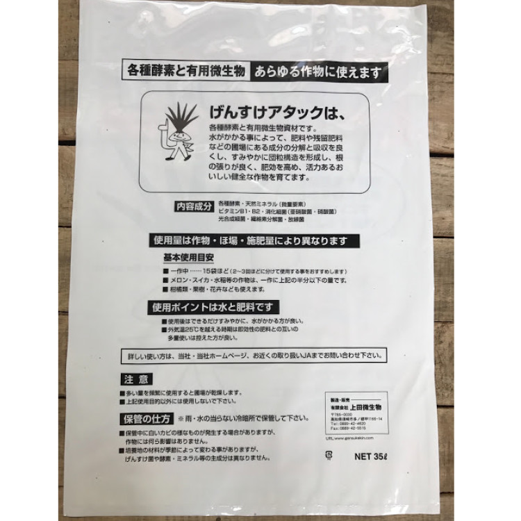
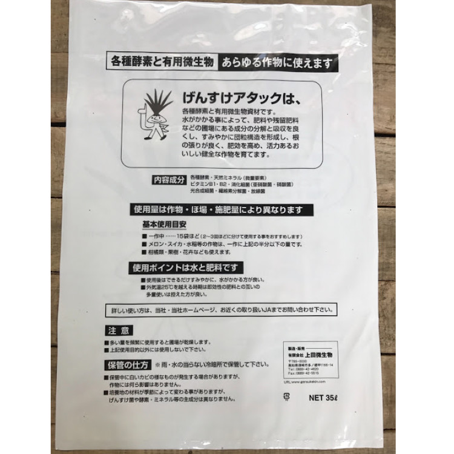

土壌環境を改善し、
健全な作物の育成をサポート
堆肥（牛フン・鶏フン・豚フン・人糞）などの有機質は土に混ぜてもすぐ有効に働いてくれるものではありません。また、土が柔らかくなるのは堆肥の量や働きではなく微生物の働きが必須です。
げんすけアタックは、有効な微生物(GS菌群)と分解消化酵素(げんすけ酵素)の力により、土の中にいる既存の有用微生物を活性化させ、堆肥や有機質から発生する有害なガス・害虫の発生など、植物の成長阻害成分を速やかに分解抑制し、有効に効率良く働かせます。土壌の団粒構造の形成も素早く持続性があり、また有機質肥料などの独特な臭気も速やかに抑えてくれる土壌改良材です。
秀品率アップと
増収のための基本づくり！
げんすけアタックは肥料を効率よく作物に働きかけます。土壌中の残留肥料も分解して作物が吸収することができるので、土壌成分のバランスを整えることにも繋がります。さらにバランスよく豊富に含まれた天然ミネラル・アミノ酸・炭水化物の力により、美味しくて元気な作物を育てます。げんすけアタックを活用することは、安価な堆肥や有機質を有益にすることです。
GS菌とは当社が独自で開発した有用微生物菌群（※）です。
（※）硝化細菌（亜硫酸菌・硝酸菌）、光合成細菌、繊維分解菌、放線菌、各種消化酵素（タンパク質分解酵素、脂肪分解酵素、炭水化物分解酵素、アルコール分解酵素） 他
| 内容量 | 20リットル |
|---|---|
| 内容成分 | GS菌、天然ミネラル（微量要素）、アミノ酸、有機酸、ビタミンＢ１／Ｂ２、バーク堆肥、鶏糞、馬糞、フスマ、ヌカ |
| 取扱い | ポリ袋が破けるのでやさしく取り扱うこと。 冷暗所で保管。 雨や水にあてないようにしてください。 |